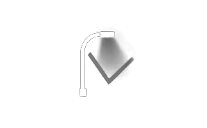

Sistema de Monitoreo de Activos Urbanos
Modo Claro
Modo Oscuro
Mapa Base Satelital
Fecha actualización:
Cargando…
Todas
0
Luminarias
Tecnología
LED
0%
Sodio
0%
Otros
0%
0
Árboles
Estado Forestal
Mapa de calor
Bueno
0
Regular
0
Malo
0
Otros
0
0
Km Viales
Distribución Km
Pavimentado
0
Consolidada
0
Tierra
0
Sin dato
0
Km por Zona (Jurisdicción)
Municipal
0
DPV
0
Otro
0
0
Lateral Vial
Kilómetros Relevados
Cordón
0
Banquina/Vereda
0
Cuneta
0
0
Solicitudes
Solicitudes por Tipo
Infraestructura
0
Mantenimiento Op.
0
Obra / Extensión
0
Reconversión LED
0
Reparación / Rep.
0
Distrito
Referencias
▾
Simbología